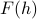
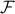
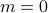
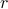
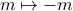
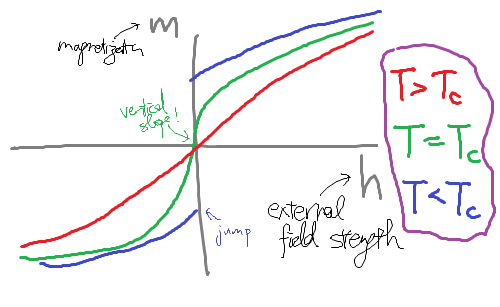

Landau Theory
Overview
Previously, we've found that the thermodynamic behavior of the mean-field Ising Model is entirely captured by its Landau Free Energy  .
.
On this page, we're going to analyze this function in its full gory detail. Starting first-principles from the microscopic Hamiltonian, we'll find the Landau Free Energy of the mean-field Ising Model, and then zoom in around the critical point to observe qualitative features of its phase transition (all in a mean-field treatment). It will be enlightening and beautiful!
But the full power of the Landau Theory doesn't lie just here – it lies in its remarkable ability to generalize for all sorts of different phase transitions, such as superfluids, liquid crystals, shape-shifting transitions, order-disorder transitions, and more. We'll see examples of other Landau Theories in the next section, when we'll also generalize to spatially-varying order parameters.
And finally, we'll see how the behavior of the Landau Free Energy near a critical point is actually completely determined by symmetries. This sort of universality is the dream of theoretical physicists, and it's incredibly powerful: it says that the way a thermodynamic system behaves doesn't depend too much on all the minute micrsocopic details of what it's made out of; the emergent behavior has a sort of universal behavior.
I hope this is enough motivation to see why it's well worth our time to understand Landau Theory. Here's the game plan:
Outline
Deriving F(m) for the Ising Model
The true power of Landau Theory is its generality, but I find it pretty tough to understand this generality without first grasping a concrete examples. For this reason, we'll first turn to our favorite model system: the Ising model.
Let's start off by deriving explicitly from the microscopic Hamiltonian of the Ising Model.
It's rather rare that we can calculate the explicit form of the Landau Free energy starting from a microscopic description of the system (the individual spins and their interactions). Rather, we typically start with symmetry arguments to figure out the shape that the Landau Free Energy must have; that is, we take a top-down rather than a bottom-up approach. We'll discuss this philosophical point later when we talk about symmetry arguments.
As before, we'll proceed with a variational approach. Rather than finding the exact free energy (hard!), we will find the variational free energy
where  is the exact Hamiltonian of the Ising Model
is the exact Hamiltonian of the Ising Model
and  is our non-interacting variational guess of
is our non-interacting variational guess of
(Remember, our variational free energy is our best guess for the exact free energy.)
Thankfully, we solved this problem a few weeks ago. With a bit of work, we found that the variational free energy was
where the magnetization is given by , and the molecular field  is determined by the self-consistent relation , where
is determined by the self-consistent relation , where  is the number of nearest neighbors. (We derived the expressions for
is the number of nearest neighbors. (We derived the expressions for  and
and  while discussing non-interacting spins, and we derived the self-consistency relation while finding the ‘‘best’’ variational guess for ).
while discussing non-interacting spins, and we derived the self-consistency relation while finding the ‘‘best’’ variational guess for ).
To proceed further, let us simplify our expression for  . Notice that two of the terms are sums over sites
. Notice that two of the terms are sums over sites  , so it would be nice to also express the sum over bonds
, so it would be nice to also express the sum over bonds  as a sum over sites. Well, one way to do this is to sum over all the sites, and then for each site, sum over the neighbors of each of the sites, but if you think about this a bit, you realize that you actually count each bond twice when you do this. (Think about it….carefully….) In mathematical symbols, we can write this as
as a sum over sites. Well, one way to do this is to sum over all the sites, and then for each site, sum over the neighbors of each of the sites, but if you think about this a bit, you realize that you actually count each bond twice when you do this. (Think about it….carefully….) In mathematical symbols, we can write this as
where is the number of nearest neighbors next to each site.
With this observation, the (variational) free energy simplifies to
We can interpret the quantity inside the brackets as a free energy density  that we sum up over sites to find the total free energy: . To simplify the expression further, let's employ the relation to write everything in terms of rather than . (Remember, the whole name of the game here is to write everything in terms of the physical quantity . The ‘‘local field’’ isn't exactly a physically observable quantity, so we'd like to get rid of it.)
that we sum up over sites to find the total free energy: . To simplify the expression further, let's employ the relation to write everything in terms of rather than . (Remember, the whole name of the game here is to write everything in terms of the physical quantity . The ‘‘local field’’ isn't exactly a physically observable quantity, so we'd like to get rid of it.)
We're left with
Hooray – we've arrived at our expression for the free energy, and we've got rid of all the 's.
Here I'm writing the free energy density so I don't have to carry around a needless sum over
, and I've also dropped the ‘‘var’’ subscript because I'm lazy.Notice that the last two terms combined when we applied the self-consistency relation. If we didn't have that extra factor of two from avoiding over-counting the bonds, the two terms would have cancelled.
There's one last thing to do: we need to take the Legendre transform to find the free energy as a natural function of the magnetization . Remember, I spent a while on the probe fields page arguing why we wanted to express everything in terms of rather than unphysical probe fields, and why this meant that we needed to take a Legendre Transform from  to  .
.
Well no recourse than to plug into . It turns out that the algebra works out the easiest if we start from a less-simplified form of . So here we go:
![tilde mathcal{F}(m) = left(-T log[2 cosh(beta b)] - frac {zJ} 2 m^2 + (b - h) mright) + hm](eqs/3039395516152280432-130.png)
Our goal here is to get rid of all the 's and express everything in terms of the one true physical magnetization  . Well, there's two 's to take care of here. The second term is pretty straight forward; we can invert the formula for magnetization and say that . For the first term, we have to perform a bit of clever hyperbolic trig massaging:
. Well, there's two 's to take care of here. The second term is pretty straight forward; we can invert the formula for magnetization and say that . For the first term, we have to perform a bit of clever hyperbolic trig massaging:

which means that the first term becomes
![-T log (2cosh (beta b)) =frac T 2 logleft[frac{1 - m^2}{4}right].](eqs/4753957055914117515-130.png)
Triumphantly, we declare the Landau Free Energy of the mean-field Ising model:
Let's recap what we've done. We wanted to see how the Ising Model behaved under a variational mean-field treatment. To proceed, we calculated the variational free energy , took a Legendre Transform, and then ended up with the (‘‘Gibbs’’) free energy as a natural function of the mean magnetization .
The behavior of the Landau Free Energy will give us useful physical information. In particular, the most interesting thing about the mean-field Ising model is its phase transition at , so let's go ahead and see how the Landau Free Energy behaves around there.
Expanding about critical point
(Notational note: I'm gonna be sloppy and call this newly derived free energy density rather than . In class, we called this function . Same concept, different notation.)
If you stare at the explicit formula for , you'll find that it's remarkably unenlightening: I have very little sense of how an inverse hyperbolic tangent behaves, much less this nasty combinations of terms. Thankfully, we can draw upon a little physical insight about the behavior around the phase transition at  .
.
Thinking back to the mean-field solution to the Ising model, you'll remember that something remarkable and surprising happens when we cool the system below : the equilibrium magnetization suddenly goes from  to  . And in particular, it went from zero to nonzero continuously, which means that it's pretty close to zero around the critical temperature.
. And in particular, it went from zero to nonzero continuously, which means that it's pretty close to zero around the critical temperature.
So we're actually in luck: as long as we're close enough to  , we can Taylor-expand the free energy in terms of small . The resulting polynomial will help us understand all the interesting correlations and relations that happen near the phase transition. Now, of course, once gets too big, there's now reason for us to trust our low-order-expansion, but the crucial point is that near the critical point, the only thing that matters are the lowest-order-terms in .
, we can Taylor-expand the free energy in terms of small . The resulting polynomial will help us understand all the interesting correlations and relations that happen near the phase transition. Now, of course, once gets too big, there's now reason for us to trust our low-order-expansion, but the crucial point is that near the critical point, the only thing that matters are the lowest-order-terms in .
So if we want to figure out how things behave near the critical point, it's sufficient to expand the Landau Free Energy in small .
Expanding the free energy
Now….I'm a bit too lazy to do the algebra. It's just a Taylor expansion, so it shouldn't be too bad. I'll just quote our answer from class:
where the dots represent higher order terms in . We can write this a bit more nicely as
where the coefficients have been defined as
There's a number of things we can say about this free energy function:
Remember, we can't trust this expression too far away from the critical point; it's only good for small
when we're just near the phase transition. Indeed, it's just a Taylor expansion!We defined  and the way they were so that we wouldn't have extra numbers floating around when we take derivatives. See below…
Notice that there's only even powers of
in here. That's because the original Hamiltonian was actually invariant under a spin-flip , which means that the free energy also stays the same when you flip the spin: . Only even powers of have such a symmetry.Something special happens to the quadratic coefficient when the temperature is at ! It becomes zero. Indeed, we can think of as ‘‘measuring how far we are from the critical temperature’’.
The constant term doesn't affect where the minima are – it's like a constant offset to the energy – but however, it does carry some temperature dependence, meaning that it contributes to the heat capacity of the system, for instance.
Looking at the minima
The reason we cared about the Landau Free Energy was that its minima tells us the equilibrium value of the magnetization. With our earlier full expression for , it was hard to find the minima, because it had ugly functions like inverse hyperbolic tangents, but now that we've expanded it as a low-order polynomial, it's actually remarkably easy to find its minima. I like to think of it as high-school math with a graduate-physics interpretation.
Before we plug in through the algebra (and trust me, it's very simple algebra!), it's informative to think about how we expect the solutions to behave, from the knowledge that we already know about the Ising Model.
We expect that at high temperatures ( ), the magnetization will be zero because the magnet is disordered, and thermal fluctuations are energetic enough to destroy any long-range order. And we expect that below the critical temperature, the magnetization will spontaneously become nonzero – and in fact, we expect there to be two equivalent solutions at , because of the spin-flip symmetry that we talked about earlier. In terms of the Landau Free energy, the question ‘‘are we above or below the critical temperature?’’ is answered by ‘‘is positive or negative?’’, so we expect that the minima of will depend on the sign of .
), the magnetization will be zero because the magnet is disordered, and thermal fluctuations are energetic enough to destroy any long-range order. And we expect that below the critical temperature, the magnetization will spontaneously become nonzero – and in fact, we expect there to be two equivalent solutions at , because of the spin-flip symmetry that we talked about earlier. In terms of the Landau Free energy, the question ‘‘are we above or below the critical temperature?’’ is answered by ‘‘is positive or negative?’’, so we expect that the minima of will depend on the sign of .
With this physical picture in mind, let us proceed to find the minimia of the Landau Free Energy. Take the derivative, set it equal to zero, and solve for :
Either  , or , a.k.a . The nonzero solution only makes sense if the thing in the square root is positive; i.e., if and we're below the critical temperature. So the equilibrium value of magnetization (the one that minimizes ) is given by
, or , a.k.a . The nonzero solution only makes sense if the thing in the square root is positive; i.e., if and we're below the critical temperature. So the equilibrium value of magnetization (the one that minimizes ) is given by
Notice that means the same thing as
, and means the same thing as  .
.I've written absolute value signs around the in the second case to emphasize the fact that is negative there.
Also notice that at , a.k.a, at
 , both of the expressions agree and equal to each other; i.e., the equilibrium magnetization changes continuously as we lower the temperature. We call this a continuous phase transition. (In contrast, we'll see later that sometimes the order parameter ‘‘jumps’’ between the two sides of a phase transition; this is known as a first-order or discontinuous phase transition).
, both of the expressions agree and equal to each other; i.e., the equilibrium magnetization changes continuously as we lower the temperature. We call this a continuous phase transition. (In contrast, we'll see later that sometimes the order parameter ‘‘jumps’’ between the two sides of a phase transition; this is known as a first-order or discontinuous phase transition).One more observation: the exact way that
grows out of zero is proportional to the square root of how far you are from the critical temperature – . The funny thing about the square root function is that it has infinite slope at the origin! And also, if you plot out how changes as a function of  (or ), you'll find that there's a ‘‘kink’’ at the critical point (or ). These sorts of funny non-analytic behaviors in the free energy are the hallmarks of a phase transition.
(or ), you'll find that there's a ‘‘kink’’ at the critical point (or ). These sorts of funny non-analytic behaviors in the free energy are the hallmarks of a phase transition.
In my opinion, the best way to visualize the minima of this quartic is by playing with interactive sliders.
You can visually see how the unique minimum above the critical tempearture starts to ‘‘flatten out’’ as you approach criticality, and then the two new minima at appear once you've cooled below the critical point. You can also see the dilemma of ‘‘spontaneous symmetry breaking’’: if you're standing on top of the hill at below the critical temperature, both sides look ‘‘the same’’ to you, so how do you know which minimum to pick?
To summarize, the Landau Free Energy lets us visualize the phase transition from to in an intuitive manner. It recapitulates the behavior we've found earlier, and in addition, it makes the quantitative prediction that the magnetization grows like once we cool below the critical temperature.
There's other sorts of funny things that happen near the critical point, too. Many of these behaviors have to do with what happens when you poke the system with an external perturbation such as a magnetic field. We'll find that systems near criticality become so sensitive that the tiniest flicks can lead to long-ranging correlations and slow relaxations.
External Fields
To study what happens when we prod or poke a system, we need to introduce an external field into the Hamiltonian of the system. By enticing the spins with an energetic reward of (so alluring!), the external field makes the spins ‘‘want to point’’ in a particular direction. For you thermodynamic nerds out there (like myself), you can think of this field as a conjugate force to the order parameter in the free energy ;)
Drawing Phase Diagrams
With this external field, we now have a total of two knobs that we can twiddle to mess with the system: there's the quadratic coefficient (which, again, you can think of as the temperature), as well as the external field  , which makes the spins prefer one direction to the other and ‘‘breaks the symmetry’’. Since there's two different knobs to twiddle, we can summarize the behavior by drawing an phase diagram. Each point on the phase diagram correponds to a particular combination of and . An experimental protocol such as ‘‘heat the system to 400K, then turn on a strong magnetic field of 1T, then cool back to 300K’’ corresponds to a path on a phase diagram.
, which makes the spins prefer one direction to the other and ‘‘breaks the symmetry’’. Since there's two different knobs to twiddle, we can summarize the behavior by drawing an phase diagram. Each point on the phase diagram correponds to a particular combination of and . An experimental protocol such as ‘‘heat the system to 400K, then turn on a strong magnetic field of 1T, then cool back to 300K’’ corresponds to a path on a phase diagram.
In this picture, phase transitions correspond to funny behaviors of the equilibrium magnetization as you walk along different paths on the phase diagram. So for instance, if the magnetization suddenly jumps discontinuously, you've walked over a first-order phase transition! Or if it ‘‘kinks’’ (i.e., its derivative is discontinuous), then you've walked over a second-order phase transition.
To figure out where phase transitions occur, we'll need to figure out the equilibrium value of at each point on the phase diagram. That is, we'll need to minimize for different values of and . When we plot the value of on the phase diagram, the discontinuous jumps correspond to first-order transitions, and the places where the derivates jump correspond to second-order transitions.
Again, the algebra is relatively straightforward, but I always like to gain a qualitative picture of what's going on before diving into any calculations. So go have some fun with the applets before reading on. Trust me, they're pretty addictive…
Features of Phase Diagram
The phase diagram is a nice way to visualize what happens as we vary the two parameters of our model (the temperature and the external field ). To summarize some of the findings from playing around with the applet:
There is a line of first-order phase transitions along the axis when (that is, when we're colder than the critical temperature). Remember, earlier we said that when the field is exactly zero below the critical temperature, then the two free energy minima at were exactly equivalent – but the smallest external field is sufficient to perturb the energies of the two minima such that one minimum is preferred to the other. When , the positive solution is lower in energy; when , the negative solution is. And so when dial the field through zero, there's a discontinuous jump as the system ‘‘toggles’’ between the two minima.
In a sense, these two minima are discrete and topologically distinct: there's no way to ‘‘continuously deform’’ from one to the other without passing through the maximum around
. Later on in other models, we'll see examples where the broken-symmetry minima are continuously related to each other.
If we were to dial the field through zero above the critical temperature, nothing too spectacular happens; the magnetization just continuously changes from slightly on one side to slightly on the other.
The earlier critical point that we discovered at is still present at the origin; we say that a line of first-order transitions terminates at a second-order transition.
Indeed, the transition becomes more and more weakly first-order the closer you get to the end of the line. If you fiddle with the applet, we see that the closer we get to the critical point, the smaller the jump in
from one side of the line to the other. In a sense, as we warm up to the critical point, this first-order discontinuity fizzles away into a continuous transition.
If you think back to the liquid-gas phase transition, you'll realize it's exactly the same shape on the phase diagram! That is, there was a line of discontinuous liquid-gas transitions, but the line terminated at a critical point, above which there was no distinction between the aqueous and gaseous phase.
You can measure some of the critical exponents near the liquid-gas critical point (for instance, how the compressibility depends on the temperature, or something like that). And rather remarkably, you'll find the exact same critical exponents regardless of what gas you measure, and also the exact same exponents as the (exact) 3D Ising model! It's utterly remarkable that despite the completely different microscopic physics of the abstract Ising spins or the poisonous chlorine gas or the noble neon, that the behavior near the critical point stays the same.
This is a clue into the universality of phase transitions, which we alluded to briefly in class, but which unfortunately we won't have time to dive into all the gory details.
Are spin-up-ordered and spin-down-ordered different phases of the Ising model? Well…..nope. You can undergo a phase transition without transitioning between phases (?).
More precisely, it's possible to continuously twiddle the external knobs on the Ising system, and start from spin-up-ordered, and end with spin-down-ordered, without any sudden discontinuous jumps in the magnetization. All you have to do is to ‘‘walk around the line of first-order transitions’’ by heating up the magnet, dialing the external field in the other direction, and then cooling the magnet again. So they're really the same phase…
By a similar argument, the liquid and gas phases are really the same phases as well, because you can continuously get from one to the other by just walking around the critical point on the phase diagram. Of course, typically in our day-to-day life, we don't reach pressures and temperatures high enough to walk around that point, so we're forced to cross the line of discontinuous density to boil water.
This begs the natural question, ‘‘what counts as distinct phases of matter’’? As we see, it's a pretty subtle question. Well, we can be sure that two points on the phase diagram are in different phases if there's no way to get from one point to the other without passing through a line of discontinuities.
I wish I could explain further, but we should move on to explicitly calculating critical exponents.
Discovering More Critical Exponents
So far, we've answered lots of fun qualitative questions about the phase diagram of a mean-field Ising model, but it's time to get a bit more quantitative. Pictures can only get you so far.
Just by looking at the shape of , you can deduce that that the magnetization is zero above , but becomes nonzero below . However, to figure out the exact functional dependence of how depends on your distance below , you need to do a bit of algebra to find that . We're about to do the same thing here: now that we have some intuition about what happens in the  phase diagram, it's time for us to do some specific calculations.
phase diagram, it's time for us to do some specific calculations.
Notice that our first critical relation () took the form of a power law – that is, the quantity we cared about varied as the distance from the critical point raised to some power. We'll find that these other relations will also hold power-law forms.
Again, the name of the game is to minimize the free energy for different values of and on the phase diagram. This time, because we added an external field, the free energy looks like
where the term breaks the symmetry by enticing one of the two states with an energetic reward. Now the derivative becomes
which unfortunately is a cubic equation! Thankfully, we won't need to explicitly find the roots of this cubic.
How magnetization varies with external field
Since we introduced an external field, a natural question to ask is how the equilibrium value of changes as we twiddle the external field. That is, we want to walk left-right on the phase diagram, and see what happens to the magnetization.
Evidently, the -dependence of is going to change depending on what the temperature is. To make life the easiest, we'll just consider what happens at the critical temperature (or equivalently, ). This corresponds to walking left-right along the axis.
Thankfully, if we set in our cubic formula for  , then one of the terms disappears, and the cubic becomes really easy to solve:
, then one of the terms disappears, and the cubic becomes really easy to solve:
Again, we've uncovered another power-law relation: the magnetization varies as the cube root of the external field as we sit at the critical temperature.

Above, I've plotted the behavior of this function in green. As you go left to right along the x-axis, it corresponds to twiddling the knob on the external field. Exactly when  , we find that , as expected, and as you make the field stronger and stronger, the magnetization gets bigger and bigger.
, we find that , as expected, and as you make the field stronger and stronger, the magnetization gets bigger and bigger.
For comparison, I've also plotted the field-dependence of magnetization for two other temperature isotherms, at hotter and cooler temperatures than the critical temperature. (The blue and red curves correspond to walking left-to-right on the phase diagram slightly above or slightly below the  axis.) Above the critical temperature, the magnetization doesn't depend quite so strongly on the external field – it doesn't change quite as much when you change the field a certain amount. And below the critical temperature, the magnetization undergoes a jump when you pass from to . This plot is a different way of visualizing the first-order phase transition from earlier.
axis.) Above the critical temperature, the magnetization doesn't depend quite so strongly on the external field – it doesn't change quite as much when you change the field a certain amount. And below the critical temperature, the magnetization undergoes a jump when you pass from to . This plot is a different way of visualizing the first-order phase transition from earlier.
Notice that the slope of the graph is vertical at when you sit at the critical temperature! This suggests that the magnetization is extremely sensitive to the external field at the critical point – the smallest little hint of an external field is sufficient to change the magnetization by a ton. We say that the system is highly susceptibile to external field perturbations near the critical point.
Susceptibility
To quantify just how sensitive the system is to external fields, we can calculate the zero-field susceptibility  at different temperatures near the critical point. (The susceptibility is just another name for the slope of the graph when we pass through .) We want to figure out how this susceptibility changes as we vary the temperature around the critical point. In terms of the phase diagram from earlier, we want to walk on a vertical line at near the critical point , and find the susceptibility at different points along this line.
at different temperatures near the critical point. (The susceptibility is just another name for the slope of the graph when we pass through .) We want to figure out how this susceptibility changes as we vary the temperature around the critical point. In terms of the phase diagram from earlier, we want to walk on a vertical line at near the critical point , and find the susceptibility at different points along this line.
To find , we're going to do a clever trick. Earlier when we set equal to 0, we ended up with the cubic equation
Since our quantity of interest is a derivative with respect to , let's take the -derivative of both sides of the equation above. We end up with
Thankfully, we can find the suscpetibility without having to solve a cubic equation! If we shuffle terms around, we find that
where in the final step, I plugged in our results from earlier that above and below .
There's a few comments to make:
The algebra really isn't that terrible! It's just a few lines of simple manipulations.
Again, I'm using absolute value signs below
to emphasize the fact that is negative there.We've found another power-law dependence: the susceptibility depends on some power of how far we are from the critical point.
Remarkably, we've found that the susceptibility diverges at the critical point! That is, as you get arbitrarily close to the critical temperature, the system becomes more and more sensitive to perturbation by an external field.
Graphically, we can visualize this divergence by plotting at different values of
, as I've done above. A diverging susceptibility corresponds to a vertical slope at on the plot. The further away we get from the critical temperature, the flatter the curve gets near there.
Recall that the susceptibility is related to the second derivative of the free energy. We've just discovered that it blows up at the critical point; i.e., it experiences a singularity or a non-analyticity. This is the reason we've been calling this transition a second-order phase transition all along: it's because the second derivative of the free energy diverges.
In comparison, during a first-order phase transition, the first derivative of the free energy experiences a non-analyticity. For instance, earlier we found that the magnetization
 experienced a discontinuous jump when we crossed the axis below the critical point.
experienced a discontinuous jump when we crossed the axis below the critical point.
Moreover, the diverging susceptibility tells us an extremely wacky fact about physics near criticality: the tiniest nudges can cause the hugest changes. Fluctuations can play a very big role in the behaviors of such systems!
Summarizing our critical exponents
Let's step back now to review the big picture:
We want to understand what happens to an mean-field Ising model as we vary the external field and temperature  .
.
The equilibrium value of magnetization
is given by the minimum of the Landau Free Energy .Zooming in around the critical point allows to perform a small-
Taylor expansion .A phase diagram allows us to visualize the behavior as we twiddle the knobs to different values of and
.Above the critical temperature (), the magnetization changes continuously everywhere.
Below the critical temperature (), the magnetization jumps discontinously as you cross over the line .
The quantitative dependencies near the critical point typically had the form of power laws like . The critical exponents  are particularly interesting because they don't depend on the microscopic details and because you can measure them in experiments.
are particularly interesting because they don't depend on the microscopic details and because you can measure them in experiments.
We encountered three different critical exponents:
If we sit at zero-field and cool the system through
, it develops a magnetization that grows as
-
This exponent is conventionally called
 , and here we've found that when ; i.e., .
, and here we've found that when ; i.e., .
If we sit at the critical tempearture and twiddle the external field
, we find that the magnetization varies as
-
This exponent is conventionally called , and here we've found that when
; i.e., .
As we cool the system through the critical point, we find that the zero-field susceptibility varies as
-
This exponent is conventionally called , and here we've found that at
; i.e., .
Lots of very interesting physics. Nonetheless, the Landau Theory is still rather restrictive, for a number of reasons. We encountered one of the caveats when we found the susceptibility: we found that as we get closer to the critical point, the system becomes more and more sensitive to little perturbations, which means that thermal fluctuations about equilibrium become more important. In particular, this calls into questions our original assumption that we could treat the entire system as a uniform magnetization everywhere. We've neglected the spatial fluctuations at different sites on the lattice.
So in the next section, we're going to learn how to generalize from a uniform magnetization everywhere to a spatially varying magnetization that can have interesting textures and spatial fluctuations.